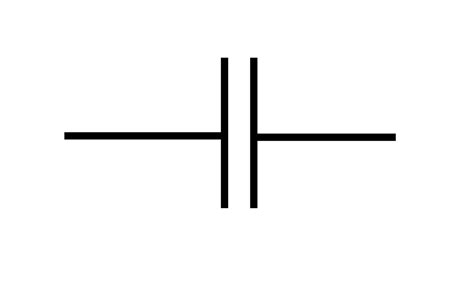
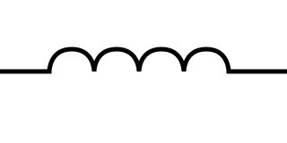
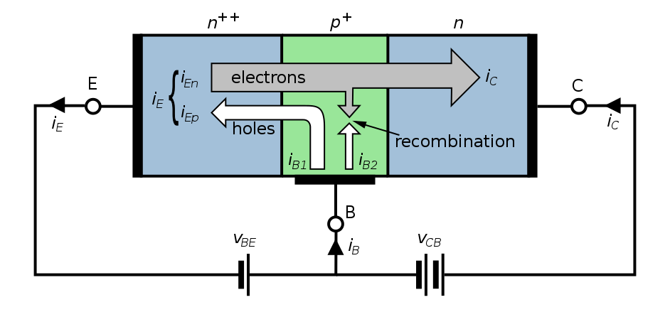
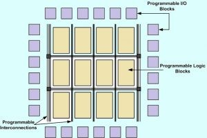

Cal Poly Audio Engineering Society Workshop: Microcontroller Theory and Application
Contents
- Contents
- Introduction
- Electronics
- Digital Logic
- Binary Number Theory
- Computer Elements and Architecture
- High-Level Language Programming (with C)
- Microcontroller Hands-On
Introduction
Brief Overview
What Are Microcontrollers?
In a sentence: microcontrollers are low-cost, low-level computers designed for use in dedicated applications. We'll present a more formal definition later.
Microcontrollers come in a variety of form factors (called "packages" in-industry) and are typically tiny (on the order of millimeters).

How Can Microcontrollers Be Used?
Common use cases:
- Robotics
- Hardware automation and equipment control
- Networking and Internet of Things
- Audio/video coding
- Data acquisition systems
- Operating simple user interfaces
- Consumer devices
- Wearable technology
- Medical technology
- Prototyping


Workshop Contents
- Microcontroller theory:
- Electronics
- Digital logic
- Computer elements and architecture
- C language
- Microcontroller design
- Microcontroller development and tools
- Hands-on project
Prerequisites
- You have a computer with internet access that you are comfortable installing programs on.
- You are not afraid of the terminal / command line.
- You want to learn about the underlying theory of microcontrollers!
Electronics
At its foundation, embedded systems are electrical systems that we've organized in such a way that they become useful. Microcontrollers happen to be one possible way of organizing an electrical system. To develop a solid theory for microcontrollers, we must first have a solid footing in electrical system theory.
Electronics Fundamentals
Electricity is the presence and movement of charge through conductive paths. We use several terms to quantify this movement of charge (denoted by dimensional value Q, with SI unit Coulomb [C]):
Current describes the rate of flow of charge past a reference point or through a reference surface.
- Dimensional value: Current with SI unit: Ampere [A] = [C/s]
- Relation:
Voltage (aka Electric Potential or Electro-Motive Force) describes the amount of energy needed to move a unit charge between reference points in an electric field.
- Dimensional value: Voltage with SI unit: Volt [V] = [J/C]
- Relation:
Power describes a rate of energy transfer. For electrical systems, this rate of energy transfer is in the form of charge crossing a potential over time.
- Dimensional value: Power with SI unit: Watt [W] = [J/s]
- Relation:
These concepts together:

Electronics is the discipline using movement of charge to achieve engineering goals by use of circuits (any closed loop of conductors through which current can flow). Electrical circuits are documented in diagrams known as Schematics, which use common symbols for different types of circuit elements. Elements are connected via lines indicating conductive path, where a "close" indicates connection, and an "open" indicates lack of connection.
Basic Circuit Elements
Within the field of electronics, elements in circuits are divided into two categories: passive elements, and active elements. Active elements can add electrical energy to a system, control the flow of charge, or amplify power. Passive elements can only dissipate, absorb, or store electrical energy.
The passive elements most common in circuits (not an exhaustive list):
Resistors are passive elements that only dissipate energy.
- Dimensional value: Resistance with SI unit Ohm [] = [V/A]
- Voltage-Current Relation: "Ohm's law":
- Schematic symbol:

Capacitors are passive elements that store energy in an electric field (proportional to the voltage difference across the element).
- Dimensional value: Capacitance with SI unit Farad [F] = [C/V]
- Voltage-Current Relation:
- Energy storage relation:
- Schematic symbol: 
Inductors are passive elements that store energy in a magnetic field (proportional to the current through the element).
- Dimensional value: Inductance with SI unit Henry [H] = [s]
- Voltage-Current Relation:
- Energy storage relation:
- Schematic symbol: 
The active elements most common in circuits (not an exhaustive list):
Voltage sources are active elements that supply power by means of controlled voltage (either static or dynamic). The current provided to the circuit will be determined by the load of the circuit, up to the power limit of the source (recall ).
- Schematic symbol:

Current sources are active elements that supply power by means of controlled current (either static or dynamic). The voltage provided to the circuit will be determined by the load of the circuit, up to the power limit of the source (recall ).
- Schematic symbol:

Transistors are active elements that amplify or switch power within a circuit. They will be discussed in detail in the next section.
Some common electrical circuit configurations relevant to design with microcontrollers include:
- Resistive Voltage Dividers
- Operational Amplifiers
- RC Low-Pass Filters
- Level Shifters
- Voltage Regulators
Note that most circuit design is done via schematic programs such as Altium, Autodesk EAGLE, or KiCad.
Circuit simulation is typically done with a SPICE program such as LTspice, ngspice, or a simulator built-in with the chosen circuit design software suite.
Demo: Simple voltage divider with PartSim simulator.
Transistors and Common Configurations
Transistors are active elements that amplify or switch power within a circuit. Their principle of operation is based exclusively on semiconductors - materials that are partially conductive (often having a controllable conductivity). The most common semiconductor is crystalline silicon. Semiconductors are often fabricated such that they have a built-in positive charge (P-type) or negative charge (N-type) by "doping" them to contain charge carrier atoms not native to the crystal lattice.
When a singular semiconductor crystal contains and adjacent P-type region and N-type region, this forms a P-N junction. At this interface between differently-doped regions, electrons can diffuse over the junction, which forms positive ions in the N region and negative ions in the P region. This configuration is particularly useful:

When forward-biased [a] (positive charge terminal aligned with P-type region, and vice-versa), charges are repelled towards the junction where they recombine with an incoming opposite polarity charge from the opposite region, forming current. When reverse biased [b] (negative charge terminal aligned with P-type region, and vice-versa), charges are attracted away from the junction, creating the "depletion region". Since there are no free electrons to jump the depletion region (and this would resist the natural direction of current), no current can flow.

The P-N junction [a] is one way to implement a diode (schematic symbol [b]), which is a passive element through which current can only flow in one direction. Non-ideal diodes do have a reverse bias voltage at which the depletion region can be overcome and current forced through the diode "backwards" [c].
An excellent video supplement to this discussion can be found here.
Now, we can approach transistors from a theoretical perspective. The simplest form of a transistor is a "bipolar junction transistor", which is a configuration of either P-N-P or N-P-N junctions. Transistors are three-terminal elements, with each terminal connected to one semiconductor region. BJT's have a "Collector", "Base", and "Emitter" region.
Since the Emitter region is always more heavily doped than the Collector, this favor current flow in a particular direction (direction of the arrow in the schematic symbol, by convention). In this configuration, the Base acts as a regulator for the current flowing from Collector to Emitter, or vice-versa (depending on the transistor polarity).

PNP BJTs [a] are "normally on" - there will always be current conduction / flow from Emitter to Collector unless positive current flow is supplied to the Base.
NPN BJTs [b] are "normally off" - there will be no current conduction / flow from Collector to Emitter unless positive current flow is supplied to the Base.
Here's an excellent video covering the theory above.

So far, we have discussed operating transistors either in the cutoff (no current ) or saturation (full current ) regions. It is also possible to operate in the forward active or reverse active regions, where collector current becomes proportional to base current. The active regions only become visible when the Collector-Emitter potential exceeds a certain (implementation-dependent) limit.
Transistors are particularly useful as electrical switches (operating in the cutoff and saturation regions exclusively), but with certain implementations they can also be used to build Operational Amplifiers (op-amps). Op-amps are active circuit elements that produce an output signal proportional to their input. This proportion is also known as a gain value. There is a special case where the gain value is intentionally set to 1, where the op-amp operates as a "voltage follower" or "buffer". This is useful when trying to ensure that load on a circuit does not affect some input signal. More on op-amp theory here. The remainder of this workshop will focus on using transistors primarily as switches in digital logic circuits.
One important observation: operating in the cutoff or saturation regions requires very specific conditions on the Base and Collector-Emitter terminals. Due to these conditions, it is possible to define a standard for operating conditions around which transistors for digital logic will be designed. Specifically, the standard describing maximum and minimum voltage, and switching voltage levels for logic transistors is called a logic level.
Typical logic levels in microcontroller applications are 5V nominal, 3.3V nominal, 1.8V nominal, or 1.2V nominal. The specific limits that determine the transition from "logic low" to "indeterminate" to "logic high" vary between different implementations. Be sure to check your supplier documentation for the standards used.
Digital Logic
Now that we have solid footing in understanding that electrical systems can produce circuits capable of stably representing two distinct states (digital systems), we need a theory allowing us to make statements in digital logic systems. This section will cover the mathematics supporting these digital logic systems.
Boolean Algebra
Boolean Algebra is the field of mathematics dealing with expressions that can be evaluated only to the values True (1) or False (0). Boolean algebra forms the core of any digital logic system.
Basic Operators
Just like any other algebraic system, boolean algebra relies on a set of common "operators" to describe relationships between values. Operators can work on one or more variables. Since the possible values for an output of an operator are discrete, we can form truth tables to describe the conditions that operators produce. The common operators are:
NOT (aka negation or complement)
| 1 | 0 |
| 0 | 1 |
AND (aka conjunction)
| 0 | 0 | 0 |
| 0 | 1 | 0 |
| 1 | 0 | 0 |
| 1 | 1 | 1 |
OR (aka disjunction)
| 0 | 0 | 0 |
| 0 | 1 | 1 |
| 1 | 0 | 1 |
| 1 | 1 | 1 |
XOR (aka exclusive or)
| 0 | 0 | 0 |
| 0 | 1 | 1 |
| 1 | 0 | 1 |
| 1 | 1 | 0 |
IMPLIES (aka implication or logical conditional)
| 0 | 0 | 1 |
| 0 | 1 | 1 |
| 1 | 0 | 0 |
| 1 | 1 | 1 |
EQUIVALENCE (aka biconditional)
| 0 | 0 | 1 |
| 0 | 1 | 0 |
| 1 | 0 | 0 |
| 1 | 1 | 1 |
Propositional Laws
Similar to numeric algebra, the operations in boolean algebra give rise to certain self-evident mathematical laws. Many of them are direct analogues to the laws in numerical algebra. In most cases, these laws are used to simplify propositions until they become atomic propositions, or propositions that cannot be expressed in terms of simpler propositions. The most common laws are as follows:
De Morgan's laws
Identity laws
Domination laws:
Idempotent laws:
Double negation law:
Commutative laws:
Associative laws:
Distributive laws:
Absorption laws:
Negation laws:
Logic Gates
We've observed the mathematical (symbolic) representation of boolean algebra operators and laws; now we can work towards understanding how they are represented with transistors.
The implementations of boolean operators in circuit are collectively called logic gates. Logic gates can be represented visually by schematic symbols within a logic circuit (a circuit in which the only tolerated values are voltages within the "True" band or "False" band, typically to ). Note that in these schematic symbols include a new convention: a "bubble" represents a negation at one of the terminals.
Recalling that implementations should work at some nominal logic level standard, determining an implementation for each gate requires picking a standard and then selecting underlying circuit elements. Only the NAND implementation in Transistor-Transistor Logic level (TTL) will be given, though the rest are easily searchable or available via Wikipedia.
Common logic gates that may be supported by hardware:
Buffer

Buffers are the simplest logic gate; the output logic vale matches the input value. As mentioned prior, buffers are easily implemented with op-amps. Note that in an isolated logic circuit it is rarely necessary to include buffers, but when connecting logic circuits to outside electronics, buffers can be very handy for sinking or sourcing current at logic level, or matching a weak signal.
NOT Gate (aka inverter)

The NOT gate is functionally equivalent to the NOT boolean algebra operator. Its output is the complement of the input value.
AND Gate

The AND gate is functionally equivalent to the AND boolean algebra operator. Its output is true only if both input values are true.
NAND Gate

The NAND gate is effectively an AND gate with a trailing NOT gate. Notice that the symbol is visually identical to the AND gate with the "bubble" at the output, meaning the output is negated. NAND's truth table is the inverse of AND; its output is true only if both input values are not both true.
NAND has a special property in that combinations of only NAND gates can be used to reproduce the functions of any other logical operator. Logic gates with this property are referred to as universal logic gates.
NAND gates can be implemented simply with biasing resistors, one NPN transistor and one NPNN transistor (yes, that's right, two emitters):

OR Gate

The OR gate is functionally equivalent to the OR boolean operator. Its output is true only if the inputs are not both false.
NOR Gate

The NOR gate is effectively an OR gate with a trailing NOT gate. Its output is true only if both inputs are false. Note that NOR is another universal logic gate. Recalling De Morgan's Laws:
the combinations of negation and OR or AND can be used to reach the other operator. Since NAND is a universal logic gate, NOR necessarily must be as well.
XOR Gate

The XOR gate is functionally equivalent to the XOR boolean operator. Its output is true only if the inputs have differing logic values.
XNOR Gate

The XNOR gate is effectively an XOR gate with a trailing NOT gate. It is also functionally equivalent to the biconditional boolean operator (logical equivalence). Its output is true only if both inputs share the same logic value. Note that XNOR is not a universal logic gate.
For a full proof of universality of NAND and NOR, see this resource.
Demo: logic ladder via CircuitVerse simulator.
Devising and solving logic circuits can also be a fun puzzle when idle. If you have an Android device (or emulator), "Circuit Scramble" and "Make it True - Solve the Circuit" both scratch this itch.
Implementation Options
Up to this point, we've discussed electronics primarily from a schematic point of view (with the exception of transistors). In this section, we'll discuss possible ways to realize circuits with commercial off-the-shelf (COTS) components.
Stand-Alone Components

The most straightforward way to build circuits is with stand-alone components (not a formal term). These are devices purchased commercially that serve as implementation of one electronic element (passive or active). Stand-alone components typically support either through-hole or surface-mount fabrication techniques.
Integrated Circuits

Integrated Circuits (ICs), also known as microchips, are collections of dedicated circuits implemented on a silicon wafer via photolithography. Where circuits composed of stand-alone components are made by soldering components onto a printed circuit board one component at a time, an integrated circuit's components are fabricated all at once. This makes mass manufacturing particularly easy, but also means that it is impossible to correct circuit errors after fabrication.
Integrated circuits expose electrical terminals as "pins", which lie either at the edge of the IC or underneath it. Where the terminals stand-alone components are defined by their electrical connections, integrated circuits are free to expose any net in the circuit on a pin.
Logic gates themselves can be exposed as integrated circuits, often in groups of four, though there are a wide variety of components expressed as ICs: microcontrollers, sensors, hardware drivers, discrete computer components, transistor bundles, voltage regulators, etc.
Field-Programmable Gate Arrays (FPGAs)

FPGAs are a configuration of integrated circuit in which the hardware can be configured after manufacture. To do so, the FPGA offers logic cells called lookup tables (LUTs), which are effectively programmable truth tables for single operators. The LUTs can be flexibly wired to each other through a programmable interconnect system, and then programmed to interface with the external world via programmable input/output (I/O) blocks.
FPGAs expose outputs - typically far more than other types of ICs, so it is common to see FPGAs with pins exposed using the ball grid array (BGA) surface-mount technique, where all pins are exposed as round contact "balls" underneath the chip package.
Since FPGAs are so flexible, designing with them requires a pseudo-programming language called a hardware description language (HDL), which converts human-readable logic and commands to the configuration that the FPGA expresses. The flexibility of FPGAs allows hardware designers to simulate the logic blocks of other (prototype) ICs and perform verification. Additionally, due to the large number of pins supported, FPGAs are popular in devices with high I/O requirements or applications requiring easily reconfigurable logic: audio/video encoding/decoding, software-defined radio, image processing, networking controllers, computer emulation, prototyping, etc.
While FPGA development is incredibly handy to hardware designers and some embedded systems applications, this workshop will focus primarily on microcontrollers, another type of integrated circuit.